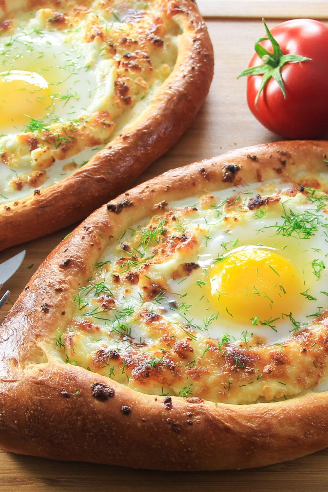

Recipe for Khachapuri
Ingredients
- all-purpose flour
- salt
- dry active yeast
- granulated sugar
- water
- milk
- olive oil
- Farmers cheese
- Shredded mozzarella
- Feta cheese
- eggs
- unsalted Butter
Preparation
- In the bowl of a stand mixer combine the salt, yeast, sugar, and flour.
- Heat water and milk to about 115 degrees Fahrenheit. Then pour it into the bowl of dry ingredients.
- Begin kneading the dough with the hook attachment until it's close to being smooth and elastic.
- Add the oil into the dough and knead for another minute.
- Drizzle a little bit of olive oil onto the bottom and sides of a deep bowl. Place the dough inside the bowl and cover with plastic wrap. Set the bowl in a warm place until the dough doubles in size, about 1 hour.
- Remove the plastic wrap and press into the dough a few times with your hands. Cover with plastic wrap once more and let it sit in a warm place for another 30 minutes.
- Meanwhile, combine the farmers cheese, feta, and mozzarella in a bowl.
- Remove the dough from the bowl and place it onto a floured surface. Then cut it into 4 equal pieces.
- Spread each piece of the dough into a circle about 9 inches in diameter. Then roll 2 opposite sides of the circle towards the center so it ends up have a boat like shape. Then pinch the corners together.
- Transfer the khachapuri onto a baking sheet lined with greased parchment paper.
- Stuff each khachapuri with the cheese mixture. Beat 1 egg with a teaspoon of water, then brush the dough with egg wash.
- Bake in a preheated 450 degrees oven for about 15 minutes or until the crust becomes golden brown.
- Make a well in the center of each khachapuri with the back of a spoon (about 3 inches in diameter) and drop 1 egg into each well. Then stick a few small pieces of butter into the cheese.
- Return the khachapuri back into the oven and bake for another 5-6 minutes. Cooking time may vary depending on your oven. The egg white should be white but still pretty runny. It will cook further as it sits in the hot cheese. When serving, mix the cheese and egg with a fork and serve immediately.